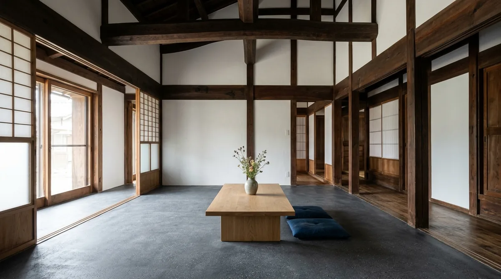
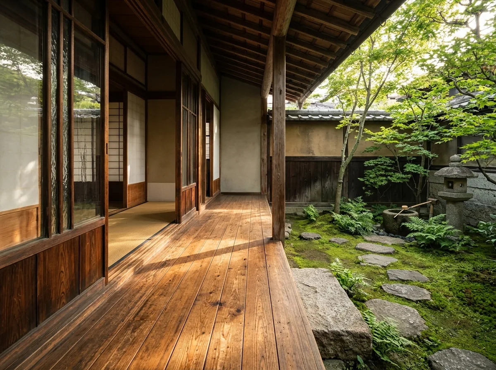

通り庭と吹き抜けの京町家京都市上京区 ／ 築108年
うなぎの寝床特有の暗さと底冷えを、中庭の採光吹き抜けと床暖房・内窓改修で解消。既存格子戸はすべて補修して継承。

HERITAGE RENOVATION
築八十年から百二十年の古民家・京町家を対象に、松梁や建具の記憶を残しながら、基礎・耐震・断熱を現代水準へ引き上げる再生建築設計事務所です。
01 / PERFORMANCE COMPARISON
上部構造評点（耐震）
1.52
基礎補強と伝統構法を活かした耐力壁で倒壊しない水準へ
冬朝の室内温度
19.5℃
床下・天井断熱と木製断熱サッシで穏やかな室温を維持
古材・建具の継承
78%
柱の根継ぎ補修と既存ガラス戸の建付け調整で継承
年間冷暖房費（目安）
約12万円
気密補修と断熱改修により光熱費を半分以下へ軽減
02 / SELECTED ARCHIVE

長年空き家になっていた祖父母の住まいを、若いご夫婦の暮らしに合わせて再生したプロジェクト。既存の建具や揺らぎのある大正ガラスは職人が一本ずつ調整して再利用し、苔と紅葉の坪庭を望む静かな縁側を取り戻しました。
うなぎの寝床特有の暗さと底冷えを、中庭の採光吹き抜けと床暖房・内窓改修で解消。既存格子戸はすべて補修して継承。
天井裏に隠れていた丸太梁を現しにし、薪ストーブのある土間リビングへ再生。母屋の離れは在宅ワークの書斎に転用。
漆喰の土蔵を陶芸作家の展示室に、母屋を住居として一体改修。補助金を活用し、耐震と断熱を同時に確保。
03 / RENOVATION PROCESS
傾き・白蟻・構造材の傷みを建築士と大工が直接診断し、再生可否と概算費用をご報告します。
残すべき古材と刷新する設備を整理。自治体の空き家改修・断熱補助金もあわせて試算します。
使える材を傷めない手解体を実施。基礎補強・柱の根継ぎ・耐力壁で骨格を確実に整えます。
白漆喰や無垢床で仕上げてお引き渡し。暮らし始めたあとの建具調整や点検も継続して伴走します。
04 / BUDGET & SUBSIDY
古民家は傷み具合や残す範囲によって工事費が大きく変わります。解体後に想定外の追加費用が出ないよう、事前の構造診断をもとに明快な概算をご提示します。
| 改修プランの目安 | 対象規模 | 主な工事範囲 | 概算費用（税込） |
|---|---|---|---|
| 部分再生・断熱改修 | LDK・水回り中心（約60㎡） | 断熱サッシ交換・床壁断熱・キッチン/浴室刷新 | 1,200万〜1,800万円 |
| 全面再生リノベーション | 延床 100〜130㎡ | 基礎補強・耐震改修・全室断熱・古材補修・設備一新 | 2,400万〜3,500万円 |
| 大型古民家・二世帯再生 | 延床 140㎡〜 | 屋根葺き替え・間取り再構築・外構/坪庭整備含む | 3,600万円〜 |
05 / FAQ
築80年以上の古民家は、現在では入手困難な太い松や欅の良材が使われていることが多く、構造体が健全なら再生する価値が十分にあります。現地調査で傾きや白蟻被害を確認したうえで、中立の立場から比較アドバイスを行います。
はい、ご契約前の物件同行調査を承っています。屋根裏や床下の状態、再建築の可否、概算の改修費用を購入前に把握できるため、予算オーバーを防げます。
多くの場合、ジャッキアップによる傾き矯正と、傷んだ柱の下部だけを新しい檜材で継ぎ足す「根継ぎ（ねつぎ）」技法によって、古材を活かしたまま構造強度を回復できます。
基礎や構造の全面補強を伴う場合は仮住まいをお願いしています。部分改修や離れがある場合は、住みながらの工程計画もご相談いただけます。
「建て替えと再生のどちらが適しているか」「予算内でどこまで直せるか」を現地調査のうえ丁寧にお答えします。